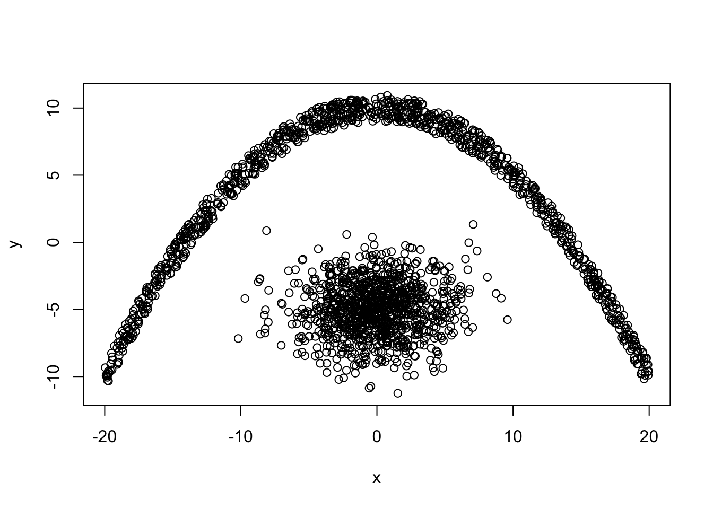
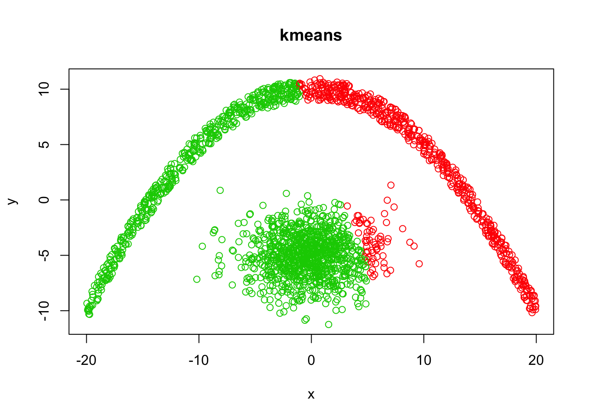
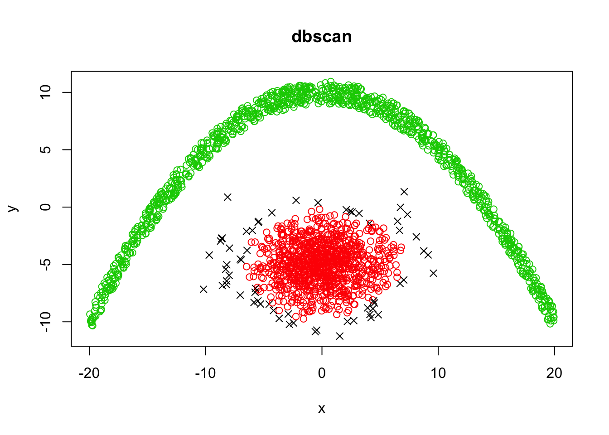

DBSCAN is a density based clustering algorithm. To use it we install the library dbscan and load it:
library(dbscan)
data <- iris[,-5]
clustering = dbscan(data, eps = 0.5, minPts = 5)
clustering## DBSCAN clustering for 150 objects.
## Parameters: eps = 0.5, minPts = 5
## The clustering contains 2 cluster(s) and 17 noise points.
##
## 0 1 2
## 17 49 84
##
## Available fields: cluster, eps, minPtsThe algorithm returns the clsuters and whether there are any noise points. The noise points are denoted with 0. To get the groupings:
clustering$cluster## [1] 1 1 1 1 1 1 1 1 1 1 1 1 1 1 1 1 1 1 1 1 1 1 1 1 1 1 1 1 1 1 1 1 1 1 1
## [36] 1 1 1 1 1 1 0 1 1 1 1 1 1 1 1 2 2 2 2 2 2 2 0 2 2 0 2 2 2 2 2 2 2 0 2
## [71] 2 2 2 2 2 2 2 2 2 2 2 2 2 2 2 2 2 0 2 2 2 2 2 0 2 2 2 2 0 2 2 2 2 2 2
## [106] 0 0 2 0 0 2 2 2 2 2 2 2 0 0 2 2 2 0 2 2 2 2 2 2 2 2 0 2 2 0 0 2 2 2 2
## [141] 2 2 2 2 2 2 2 2 2 2The classes and clusters comparison:
table(clustering$cluster, iris$Species)##
## setosa versicolor virginica
## 0 1 6 10
## 1 49 0 0
## 2 0 44 40Another package that contains dbscan is the fpc package.
Lets create and plot the dataset
x1 <- rnorm(1000,0,3)
y1 <- rnorm(1000,-5,2)
x2 <- runif(1000, -20, 20)
y2 <- -0.05*x2^2 + 10 + runif(1000, -1, 1)
y <- c(y1,y2)
x <- c(x1,x2)
plot(x,y)
From theory we know that k-means will not be able to identify the two clusters.
demo <- data.frame(x,y)
kmeansClust <- kmeans(demo, 2)
plot(demo, col = kmeansClust$cluster + 1, main="kmeans")
dbscanClust <- dbscan(demo, eps = 1, minPts = 12)
plot(demo, col = dbscanClust$cluster + 1, pch = ifelse(dbscanClust$cluster, 1, 4), main="dbscan")